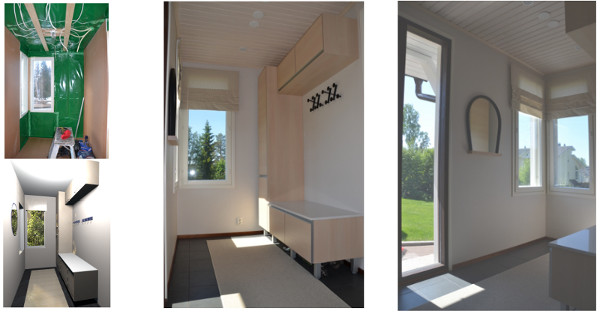

Syksy on sisustamisen aikaa. Illat pimenevät ja vietetään enemmän aikaa kotona. Vaasan Botnia-hallissa pidetään Vasara-messut 29-30.10.2016. Minulla on messuilla molempina päivinä luennot otsikolla “Viihdytkö kodissasi?”.
Kodissa viihtyminen on mielestäni sisustamisen tärkein tavoite. Vaikka paljon puhutaan trendeistä ja ne ovat kiinnostavia ja niistä on kiva ottaa omaankin kotiin uusia ideoita; viihtyvyys on kaikista tärkeintä. Koti on sinun ja sen tulisi olla myös sinun näköisesi. Tervetuloa kuuntelmaan! Lisäksi annan ilmaista sisustusneuvontaa osastollani B601. Neuvonta-ajan voit varata jo etukäteen tai tulla kuvien ja piirrustusten kanssa messuille moikkaamaan.

Olethan käynyt Facebook sivuillani. Sieltä löydät paljon ennen ja jälkeen kuvia suunnittelemistani projekteista. Tässä esimerkiksi projekti avokuistin muuttamisesta umpikuistiksi. Kuvissa ennen kuva, 3D-kuva suunnitelmasta ja kuvat valmiista projektista.
Mikäli kaipaat apua omiin sisustusprojekteihisi, älä epäröi ottaa yhteyttä. Jo parin tunnin konsultointikäynnillä voimme saada paljon aikaan!
Erika Rentola-Björklund Sisustussuunnitelija SI
| www.erb.fi | p. 040-5629741 | erika@erb.fi |